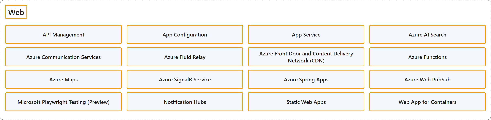

6. Web
Classification

Glossary
| Term | Definition | 中文翻译 | Source |
|---|---|---|---|
| Web Web |
"an application (= a computer program designed for a particular purpose) that you can use on the internet rather than having to download it" | 一种应用程序（即为特定目的设计的计算机程序），你可以在互联网上使用，而不必下载它。 | Cambridge University Press & Assessment, n.d., "web app" noun |
| API Management API 管理 |
"Azure API Management is a hybrid, multicloud management platform for APIs across all environments." | Azure API 管理是一个混合、多云的 API 管理平台，适用于所有环境。 | Microsoft, 2025a, para. 1 |
| App Configuration 应用程序配置 |
"Azure App Configuration provides a service to centrally manage application settings and feature flags." | Azure 应用程序配置提供一项服务，用于集中管理应用程序设置和功能标志。 | Microsoft, 2025b, para. 1 |
| App Service 应用服务 |
"Azure App Service is a platform that lets you run web applications, mobile back ends, and RESTful APIs without worrying about managing the underlying infrastructure." | Azure 应用服务是一个让你运行 Web 应用程序、移动后端和 RESTful API 的平台，无需操心管理底层基础结构。 | Microsoft, 2026a, para. 1 |
| Azure AI Search Azure AI 搜索 |
"Azure AI Search is a fully managed, cloud-hosted service that connects your data to AI." | Azure AI 搜索是一种完全托管、云托管的服务，它把你的数据连接到 AI。 | Microsoft, 2026b, para. 1 |
| Azure Communication Services Azure 通信服务 |
"Azure Communication Services offers multichannel communication APIs for adding voice, video, chat, text messaging/SMS, email, and more to all your applications." | Azure 通信服务提供多渠道通信 API，用于向你的所有应用程序添加语音、视频、聊天、短信/SMS、电子邮件等功能。 | Microsoft, 2024a, para. 1 |
| Azure Fluid Relay Azure Fluid Relay |
"Azure Fluid Relay is a managed offering for the Fluid Framework that helps developers build real-time collaborative experiences and replicate state across connected JavaScript clients in real-time." | Azure Fluid Relay 是 Fluid Framework 的托管产品，帮助开发人员构建实时协作体验，并在连接的 JavaScript 客户端之间实时复制状态。 | Microsoft, 2022, para. 1 |
| Azure Front Door and Content Delivery Network (CDN) Azure Front Door和内容分发网络（CDN） |
"Azure Front Door is an advanced content delivery network (CDN) for the cloud. It's designed to provide fast, reliable, and secure access to your applications' static and dynamic web content globally." | Azure Front Door 是面向云的高级内容分发网络（CDN）。它旨在为你的应用程序在全球范围内的静态和动态 Web 内容提供快速、可靠和安全的访问。 | Microsoft, 2026c, para. 2 |
| Azure Functions Azure 函数 |
"Azure Functions is a serverless solution that allows you to build robust apps while using less code, and with less infrastructure and lower costs." | Azure Functions 是一种无服务器解决方案，让你可以用更少的代码构建可靠的应用，同时使用更少的基础结构，成本也更低。 | Microsoft, 2026d, para. 1 |
| Azure Maps Azure 地图 |
"Azure Maps is a collection of geospatial services and SDKs that use fresh mapping data to provide geographic context to web and mobile applications." | Azure 地图是地理空间服务和 SDK 的集合，它们使用最新的地图数据，为 Web 和移动应用程序提供地理上下文。 | Microsoft, 2026e, para. 1 |
| Azure SignalR Service Azure SignalR 服务 |
"Azure SignalR Service simplifies the process of adding real-time web functionality to applications over HTTP." | Azure SignalR 服务简化了通过 HTTP 向应用程序添加实时 Web 功能的过程。 | Microsoft, 2023, para. 1 |
| Azure Spring Apps Azure Spring 应用 |
"Azure Spring Apps makes it easy to deploy Spring Boot applications to Azure without any code changes." | Azure Spring Apps 让你可以轻松地把 Spring Boot 应用程序部署到 Azure，无需任何代码更改。 | Microsoft, 2025d, para. 1 |
| Azure Web PubSub Azure Web PubSub |
"Azure Web PubSub is a fully managed service for building applications that deliver updates in real time." | Azure Web PubSub 是一种完全托管的服务，用于构建实时推送更新的应用程序。 | Microsoft, 2026f, para. 1 |
| Microsoft Playwright Testing (Preview) Microsoft Playwright Testing（预览版） |
"Playwright Workspaces is a fully managed cloud browser platform for testing applications, automating browser workflows, and powering AI agents through browser interactions." | Playwright Workspaces 是一个完全托管的云浏览器平台，用于测试应用程序、自动化浏览器工作流，以及通过浏览器交互为 AI 智能体提供支持。 | Microsoft, 2026g, para. 1 |
| Notification Hubs 通知中心 |
"Azure Notification Hubs provides an easy-to-use and scaled-out push engine that enables you to send notifications to any platform (iOS, Android, Windows, etc.) from any back-end (cloud or on-premises)." | Azure 通知中心提供一个易于使用、可横向扩展的推送引擎，让你可以从任意后端（云或本地）向任意平台（iOS、Android、Windows 等）发送通知。 | Microsoft, 2025c, para. 1 |
| Static Web Apps 静态 Web 应用 |
"Azure Static Web Apps is a service that automatically deploys full stack web apps to Azure from a code repository." | Azure 静态 Web 应用是一种服务，它从代码存储库把全栈 Web 应用自动部署到 Azure。 | Microsoft, 2024b, para. 1 |
| Web App for Containers 用于容器的 Web 应用 |
(context) "Or, if your app is containerized, you can just deploy it as a custom container." | （语境）或者，如果你的应用已容器化，可以直接把它部署为自定义容器。 | Microsoft, 2026a, para. 2 |
Coverage
| Certification | Skill area |
|---|---|
| AZ-204 Developing Solutions for Microsoft Azure | Implement Azure security (15–20%) |
| AZ-400 Designing and Implementing Microsoft DevOps Solutions | Design and implement build and release pipelines (50–55%) |
References
- Cambridge University Press & Assessment. (n.d.). Web app. In Cambridge Dictionary. Retrieved October 26, 2026, from https://dictionary.cambridge.org/dictionary/english/web-app
- Microsoft. (n.d.). Azure documentation. Microsoft Learn. Retrieved October 25, 2026, from https://learn.microsoft.com/en-us/azure/
- Microsoft. (2022, July 29). Azure Fluid Relay overview. Microsoft Learn. https://learn.microsoft.com/en-us/azure/azure-fluid-relay/overview/overview
- Microsoft. (2023, November 11). What is Azure SignalR Service? Microsoft Learn. https://learn.microsoft.com/en-us/azure/azure-signalr/signalr-overview
- Microsoft. (2024a, May 9). What is Azure Communication Services? Microsoft Learn. https://learn.microsoft.com/en-us/azure/communication-services/overview
- Microsoft. (2024b, June 24). What is Azure Static Web Apps? Microsoft Learn. https://learn.microsoft.com/en-us/azure/static-web-apps/overview
- Microsoft. (2025a, October 13). What is Azure API Management? Microsoft Learn. https://learn.microsoft.com/en-us/azure/api-management/api-management-key-concepts
- Microsoft. (2025b, November 21). What is Azure App Configuration? Microsoft Learn. https://learn.microsoft.com/en-us/azure/azure-app-configuration/overview
- Microsoft. (2025c, May 1). What is Azure Notification Hubs? Microsoft Learn. https://learn.microsoft.com/en-us/azure/notification-hubs/notification-hubs-push-notification-overview
- Microsoft. (2025d, October 31). What is Azure Spring Apps? Microsoft Learn. https://learn.microsoft.com/en-us/azure/spring-apps/basic-standard/overview
- Microsoft. (2026a, August 18). App Service overview. Microsoft Learn. https://learn.microsoft.com/en-us/azure/app-service/overview
- Microsoft. (2026b, September 17). What is Azure AI Search? Microsoft Learn. https://learn.microsoft.com/en-us/azure/search/search-what-is-azure-search
- Microsoft. (2026c, August 28). What is Azure Front Door? Microsoft Learn. https://learn.microsoft.com/en-us/azure/frontdoor/front-door-overview
- Microsoft. (2026d, September 21). What is Azure Functions? Microsoft Learn. https://learn.microsoft.com/en-us/azure/azure-functions/functions-overview
- Microsoft. (2026e, September 17). What is Azure Maps? Microsoft Learn. https://learn.microsoft.com/en-us/azure/azure-maps/about-azure-maps
- Microsoft. (2026f, August 6). What is Azure Web PubSub service? Microsoft Learn. https://learn.microsoft.com/en-us/azure/azure-web-pubsub/overview
- Microsoft. (2026g, September 15). What is Playwright Workspaces? Microsoft Learn. https://learn.microsoft.com/en-us/azure/app-testing/playwright-workspaces/overview-what-is-microsoft-playwright-workspaces